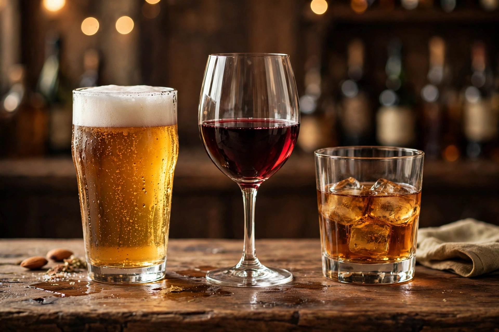

[Image placeholder: The three classes of alcoholic drinks: beer, wine and spirits]An **alcoholic beverage** (or alcoholic drink) is a drink containing ethanol, commonly known as alcohol. Alcoholic drinks are divided into three classes: beers, wines and spirits, and are produced by fermentation (beer, wine, cider) and distillation (spirits such as whisky, vodka, gin, rum and tequila). They are among the oldest and most widely consumed recreational drugs, legal in most countries (with age limits) but banned or restricted in some, notably several Muslim-majority states.
Brewing and winemaking go back to the Neolithic — residues suggest a mixed fermented drink at Jiahu, China, around 7000 BC and wine in Georgia around 6000 BC. Alcohol is embedded in religion (Eucharistic wine, Dionysian cult, sake offerings), cuisine and celebration, and is also a major cause of disease and harm: the WHO attributes roughly 2.6 million deaths a year to alcohol. Global consumption averages around 5–6 litres of pure alcohol per adult per year; per-capita consumption is highest in parts of Europe and lowest where abstinence is widespread. Beer is the most consumed alcoholic drink by volume.
Fermentation by yeast converts sugars to ethanol up to about 15% ABV; distillation concentrates it. Fortified wines (port, sherry) add spirit. Modern industry is dominated by global groups (AB InBev for beer, Diageo for spirits) alongside vast craft sectors.
States tax, license and age-rest alcohol; the US experimented with Prohibition (1920–33). Abstinence movements, temperance and modern 'sober curious' trends coexist with drinking cultures; per-capita consumption has been falling among young people in many rich countries.